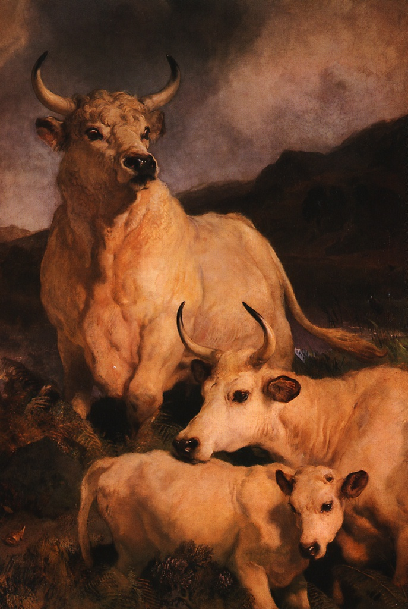

Фигуры коров господствуют в
картине, словно бросая гордый
вызов перед лицом врага. В
сущности, их потревожило всего
лишь присутствие лягушки.
Предназначенная для замка графа
Тэнкервиль в Чиллингеме,
графство Нортумберленд, картина
демонстрирует именно те
качества, которые сделали
Лэндсира столь популярным: он
отвечал вкусам викторианской
эпохи, изображая животных,
наделенными разумом, сходными
в своих эмоциях человеческим
чувствам. Вдохновляясь
романтическими образами
Вальтера Скотта, художник
совершал путешествия в
отдаленные уголки Англии, чтобы
запечатлеть природу и зверей,
которые вскоре могли исчезнуть.
Его отец был гравером, у него
Лэндсир научился делать
зарисовки животных с натуры и
уже в двенадцать лет впервые
выставил свои работы в
Королевской Академии. Он был
любимым художником королевы
Виктории. Самая известная его
работа - скульптуры бронзовых
львов на Трафальгарской площади
в Лондоне. Несмотря на присущую
работам Лэндсира
сентиментальность, в них
чувствуется иногда беспричинная
жестокость, которая, возможно,
способствовала его умственному
расстройству. Художник умер,
потеряв рассудок.
Кейп, Марк, Стабс.